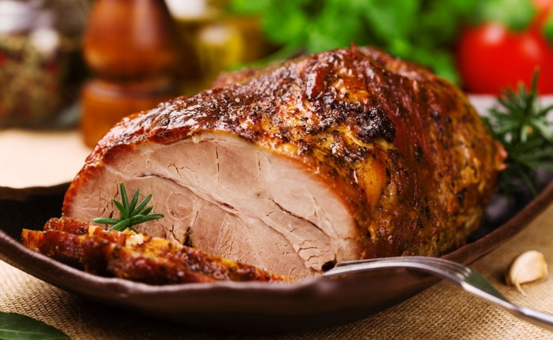
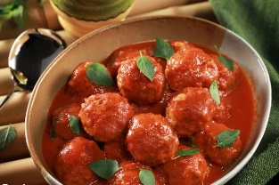

Das refeições do dia a dia às ocasiões mais especiais, a carne é a grande atração da mesa. Encontre aqui as melhores receitas de bife, filé, carne de porco, picanha, costela e outros tipos de carne e descubra como fazer pratos como estrogonofe e escondidinho de carne moída.
Lombo Assado
Almôndegas de Carne Moída Super Rápidas
